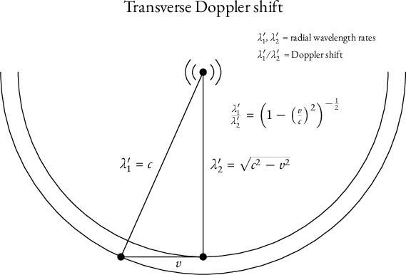
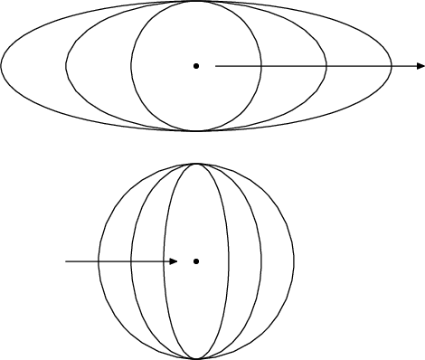
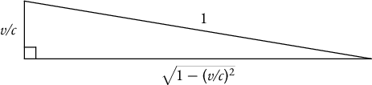
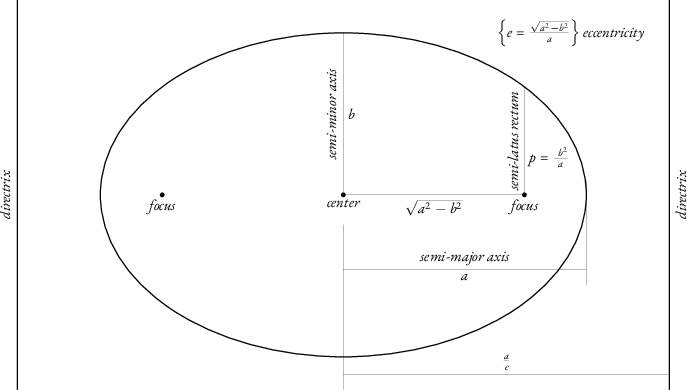
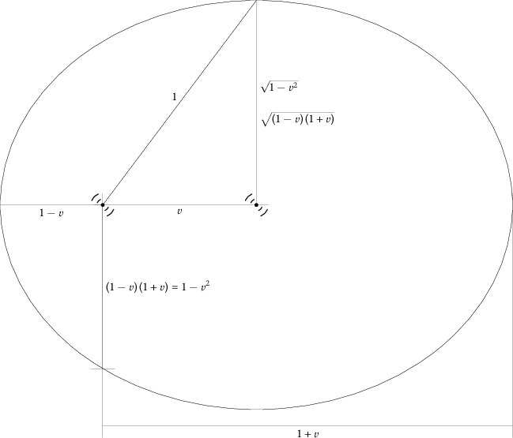

This is a work in progress.
Copyright © 2026 Barry Schwartz. This essay is licensed under a Creative Commons Attribution-NoDerivatives 4.0 International License. It is available as a webpage at https://michelson-morley.crudfactory.com/ and in source form at https://github.com/chemoelectric/michelson-morley
Introduction
Transmission antennas emit a substance radially at a velocity \(c\). The substance then moves inertially along with the antenna. Therefore the transmissions exhibit the Michelson-Morley effect. Special Relativity incorrectly introduces time dilation and length contraction, without bothering to explain the Michelson-Morley effect. Here we have an explanation, and there is no time dilation nor length contraction.
Thus this new theory supplies a mechanical explanation for the Michelson-Morley phenomenon: the waves themselves, instead of a luminiferous ether, are the inertial material. An antenna does not vibrate a medium. It emits vibrating electromagnetism.
Special Relativity, on the other hand, supplies no reasonable explanation for the Michelson-Morley phenomenon. It is merely descriptive. And it veers into error when it introduces time dilation and length contraction.[1]
Below I will derive the Doppler shifts formerly known as “relativistic” but henceforth to be known as “electromagnetic.” The reason for the renaming is I do not employ “Observer and Frame-of-Reference” methods and therefore the kinematics is not a “relativity.”
All calculations formerly delegated to Special Relativity should now be doable instead using the Doppler shifts. An exception is for problems usually solved incorrectly with Special Relativity, such as the “Twin Paradox.” That the usual solution must be wrong should be obvious. Physics teachers often cleverly attribute the asymmetric aging to the acceleration at the pivot, but this is not so. The amount of asymmetric aging is controlled by the amount of inertial motion. Thus it is inertial motion that is responsible for asymmetric aging, and this simply must be impossible.
Anyone who is just blows off such a situation ought to reconsider their role in the sciences, and perhaps should not be teaching physics. I imagine Einstein blew it off because he was very young and already an international celebrity for it! Often it is better to be rejected and search for the truth alone, over a lifetime.
Electromagnetic Doppler shift
The transverse electromagnetic Doppler shift
This is the simpler of the two, for the motion is orthogonal to the radial direction, and the Doppler shift is entirely due to the inertial motion of the emitted substance.

In the figure above, the transmission antenna is depicted as motionless, and an object is moving leftwards with respect to it.[2] If the object had stayed stationary, transmission wavelengths would have been proportional to \(\lambda_2'\). On account of the leftward motion at speed \(v\), the actual wavelengths are proportional to \(\lambda_1'\). Thus the Doppler shift is
\[ \begin{equation*} \lambda_1' / \lambda_2' = \frac{1}{\sqrt{ { 1 - (v/c) ^ 2 } }} \end{equation*} \]
Special Relativity gives the same prediction.
The longitudinal electromagnetic Doppler shift
Suppose we have a stationary object, from which a transmission antenna is receding at velocity \(v\). For “ordinary” Doppler shift in a stationary medium, this would result in each wavelength increasing by an amount due simply to the recession of the source. For electromagnetic Doppler shift, however, the wavefronts themselves also are receding. Thus the situation is more complicated.
The speed of a wavefront is now not \(c\) but \(c-v\). The speed of light is not \(c\) except relative to the light source.
Similarly, if the transmission antenna is approaching the stationary object, the speed of the wavefront is \(c+v\) instead of \(c\).[3]
Let me first do an analysis of the kind you might use on an examination where they expect you to devise a time-saving trick. Consider speeds \(1-v/c\), \(1\pm0/c\), and \(1+v/c\), representing receding, stationary, and approaching antennas (in normalized units). What is a nice, symmetric scaling factor? A nice, symmetric scaling factor is
\[ \begin{equation*} \frac{1}{\sqrt{1-( v/c )^2}} = \frac{1}{\sqrt{ ( 1-v/c ) ( 1+v/c ) }} \end{equation*} \]
A good guess for the Doppler shifts, then, is the scaled speeds, inverted because we want a shift in wavelength:
| Antenna motion | Wavelength Doppler shift |
|---|---|
receding |
\( \sqrt{\frac{ 1+v/c }{ 1-v/c }} \) |
stationary |
1 |
approaching |
\( \sqrt{\frac{ 1-v/c }{ 1+v/c }} \) |
Referring to the 1993 edition of CRC Standard Curves and Surfaces,[4] page 66, we find that \( \pm y = c \,\sqrt{ a^2 - x^2 } \) is the equation of an ellipse that is the distortion of a circle of radius \(a\). If \(c=1\), there is no distortion and the curve becomes a circle. A Pythagoras-style expression that supposedly is a “length contraction” may actually be mathematics for encounters with circular wavefronts. Due to relative motion, points of encounter may form ellipses instead of circles.[5]
A closer look tells us more. Inspection of \( \pm y = c \,\sqrt{ a^2 - x^2 } \) shows that \(c\) represents a longitudinal speed in the \(y\)-direction!
Thus we know points of encounter will form ellipses! A correct diagram depicting an object in longitudinal motion, relative to a stationary antenna, therefore might look like either of the following:

And now we know points of encounter with wavefronts will give the same expressions for Doppler shift that Special Relativity gives. Our guesses above do match the answers from Special Relativity, and thus are correct. (But see later for some actual mathematics, based on the geometry of the ellipsis.)
Now let us criticize Special Relativity. The scaling factor guessed at above is \( 1/\sqrt{ 1 - (v/c)^2 } \). Special Relativity would say this is a time dilation, and that \( \sqrt{ 1 - (v/c)^2 } \) is a length contraction. Such a conclusion is mystical “hocus pocus” that the 20th century mistook for physics. Mathematicians abandoned axiomatic systems for meaningless reduction to set theory, and a general decline took hold in realistic reasoning. But I will not let it stand. The Michelson-Morley effect is explained by electromagnetic waves having momentum, and a mathematical result, whether based on realistic axioms or just a meaningless manipulation of sets, cannot “dilate time” or shrink a physical object. We have merely derived a verbal result, and now wish to know what the result means.
We have seen that it is an expression for a circle. The following diagram suggests we might also regard \( \sqrt{ 1 - (v/c)^2 } \) as a Doppler shift-free measurement scale:

There is no “hocus pocus” in that.
Furthermore, one wonders how physicists missed the significance of \( 1 - (v/c)^2 = ( 1+v/c ) ( 1-v/c ) \). This is a clear indication the expression is the product of two speeds. What speeds? They are the speeds of wavefronts on either side of a longitudinally moving antenna or light source, with respect to a stationary object. At the dawn of the 20th century, very young Einstein instead mistakenly assumed the speed of a wavefront is always \(c\), despite that it is \(c\) only relative to the source. Einstein arrived at absurd conclusions and became a celebrity precisely because of that, practically guaranteeing he would be stuck with the theory for life. And so he was.
No one bothered looking for the actual cause of the Michelson-Morley effect, which now turns out to be mundane.
But is it the job of a physicist to seek mundane explanations? Or is it the job of a physicist to manage a portfolio of citations? For if this mundane explanation be true then many a portfolio is rendered worthless.
Generalized electromagnetic Doppler shift
Now that we know electromagnetic Doppler shift is due to wavefronts moving inertially along with their sources, it would seem prudent to dispense with the notions of “transverse” and “longitudinal” Doppler shifts. The latter is merely a holdover from conventional Doppler shift, and the former is a misattribution to “time dilation.” Instead they are both due to the timings of encounters with wavefronts. The actual Doppler shift is in fact not only a function of relative motion between a transmitter and another object, but also of the shapes of wavefronts. If the transmitter is a complicated phase array, this can be important.
But let us restrict ourselves to a simple transmission antenna and wavefronts that are spherical with respect to the antenna. Then what will be the points of encounter of an object moving inertially with respect to the antenna?
One way to phrase this question is to ask the following: assuming the antenna transmits wavefronts \(f_{t_\text{xmit}}(t),\, t_\text{xmit}\in\{t_1,t_2,t_3,\ldots\}\), then what are the times \(t_e(t_\text{xmit})\) of the points of encounter of the object with those wavefronts, and at what points in space \(g(t_e)\) do these encounters occur?
This approach gives only discrete answers, however, and is cumbersome. Really what we are interesting in is not the “points of encounter” question above, at all. That is just us trying to rephrase “Observer-Frame” so it is not “Observer-Frame”. What we want is a very general exploration of the geometry of electromagnetic transmissions, including projections between different geometric spaces.
For want of a better term, let us call such geometry the study of electromagnetic Doppler shift.
An example of such an approach is the Minkowski space of Special Relativity, which is a four-dimensional space-time with metric \( ( 1,1,1,-1 ) \). But we are unlikely to find this useful. If we do employ any kind of space-time, it will at least have to have a different square magnitude than \(-1\) for the time dimension. This is true even if using conformal geometry along with a space-time, as I believe may have been done with Maxwell’s equations and Special Relativity.[6]
I do not wish to prejudice myself with prior work on Special Relativity. Special Relativity is false. Thus I will try to proceed from scratch.
There is no such thing as a light ray
If you study the diagram above of the transverse Doppler shift, you may notice something: the “bit of electromagnetism” that the moving object encounters is not the same “bit” it would have encountered, had it not been moving. It encounters a different part of the wavefront.
There is no such thing as a light ray. Our new kinematics deals with wavefronts and never with light rays.
The geometry of ellipses
Because we are likely to do much projection onto ellipses, it could be useful to have a reference on the geometry of ellipses.
To wit:

For any point on the ellipse, the sum of its distances to the foci equals \(2a\).[7]
For any point on the ellipse, the ratio of its distance to a focus to its distance to the corresponding directrix equals the eccentricity \(e\).
A circle has eccentricity \(e=0\) and its directrices are at infinity.
Another expression for semi-latus rectum is \(p = a(1-e^2)\).
A typical Cartesian equation looks like
\[ \begin{equation*} \frac {x^2} {a^2} + \frac {y^2} {b^2} = 1 \end{equation*} \]
A polar equation with one focus at the origin might look like
\[ \begin{equation*} r(\theta) = \frac {p} {1 - e \cos\theta} \end{equation*} \]
where the sinusoidal function can be different.
Analysis of electromagnetic Doppler shift by ellipse
In the following diagram, an antenna is either stationary or moving leftwards with speed \(v\). The unit of speed is \(c\) and the unit of length is \(c\) times the time unit. The antenna is depicted at both the center and the left focus of the ellipse, to represent the stationary and moving cases, respectively.

A right triangle with legs \(v\), \( \sqrt{ 1 - v^2 } \) and hypotenuse \(1\) represents the transverse Doppler shift. A wavefront that would have had to travel a distance \( \sqrt { 1 - v^2 } \), were the antenna stationary, will have to travel the distance \(1\) if the antenna be moving. The wavelength thus experiences a Doppler shift of \( \frac {1} {\sqrt { 1 - v^2 } } \).
The longitudinal Doppler shifts are represented by the ratio of the distance of the focus to a left or right extreme to the length of a semi-minor axis. Thus, for the moving antenna, the longitudinal wavelength is shifted by a ratio of of either \( \sqrt{ \frac{1-v}{1+v} } \) or \( \sqrt{ \frac{1+v}{1-v} } \). For the stationary antenna, \(v=0\), the focus is at the center, and there is no longitudinal Doppler shift.
All these cases have in common that they are the ratio between the distance from a point on the ellipse to the focus and the length of the semi-minor axis. This makes intuitive sense, because it is a comparison of distances traveled by the wave.
I consider this proof beyond a reasonable doubt that Special Relativity is wrong.
If the distance be denoted \(d\), going from the point on the ellipsis to the directrix depicted at the far left, then \(vd\) equals the distance from the point to the focus. Thus the ratio of \(vd\) to the semi-minor axis is the wavelength Doppler shift. This is \(d\) times the cotangent of the interior angle at the left corner of the depicted right triangle.
It would appear the directrix is useful for visualizing and computing Doppler shift.
We might extrapolate that the intersection between the ellipse and the semi-latus rectum, depicted towards the lower left of the ellipse, corresponds to a “mixed” Doppler shift of \( \frac{ 1 - v^2 }{ \sqrt{ 1 - v^2 }} = \sqrt{ 1 - v^2 } \). Let us explore this notion.
Suppose we use the depicted left focus as pole for polar coordinates. Then the polar equation of the ellipse is
\[ \begin{equation*} r = \frac{1-v^2}{1-v\mkern3mu\cos\vartheta} = \frac{( 1-v ) \, ( 1+v ) }{1-v\mkern3mu\cos\vartheta} \end{equation*} \]
where \(r\) is the distance from the pole to the point on the ellipse, and \(\vartheta\) is the angle of the point, rotating counterclockwise from rightwards-pointing.
Thus the general formula for the wavelength Doppler shift, in terms of \(\vartheta\), is
\[ \begin{equation*} \left. \frac{\sqrt{1-v^2}}{1-v\mkern3mu\cos\vartheta} = \frac{\sqrt{ ( 1-v ) \, ( 1+v ) }}{1-v\mkern3mu\cos\vartheta} \mkern1em\right\}\text{wavelength Doppler shift} \end{equation*} \]
where \(\vartheta\) represents the relative positions of the moving antenna and the stationary object, or of the wavefronts and the stationary object. How further to describe those positions requires (because the antenna and its wavefronts are moving) that a method be specified, and so will not be explored more here.
Further analysis of electromagnetic Doppler shift in a plane
I would like to explore the transformation between the stationary and moving antennas, but with both antennas in polar coordinates. A problem with doing that is the pole is not the same. One can certainly make the transformation with the understanding that the pole has moved, but would it not be better to use a format that makes it easy to place the poles explicitly?
So let us use one of the simpler means for doing this, and resort to two-dimensional Euclidean geometric algebra. This representation has no explicit “point” object, but does have vectors and a bivector (a counterclockwise rotation).
Let \(e_1\) represent a unit vector such that the velocity of the moving antenna in Diagram E is \(-v\mkern2mu e_1\). In other words, \(e_1\) points to the right. Let \(e_2\) be the orthogonal vector by the right hand rule. Thus \(e_2\) points upwards. Let the unit bivector be written \(I = e_1\wedge e_2 = e_1 e_2 = -e_2\wedge e_1 = -e_2 e_1\).
Rotation in two-dimensional Euclidean geometric algebra can be done in a peculiar way.[8] One can premultiply by the rotor for twice the angle or postmultiply by that rotor’s reverse. Thus, to rotate a vector \(u\) by \(\varphi\):
\[ \begin{equation*} R_{I\varphi}u\widetilde{R}_{I\varphi} = R_{I\varphi}uR_{-I\varphi} = R_{I2\varphi}u = uR_{-I2\varphi} \end{equation*} \]
where the rotor notation is \(R_{I\alpha} = \cos\frac{\alpha}{2} - I\mkern2mu\sin\frac{\alpha}{2}\). The last two expressions work only in the two-dimensional algebra.
For rotating \(e_1\), this all unsurprisingly works out to be
\[ \begin{equation*} R_{I\varphi}e_1\widetilde{R}_{I\varphi} = (\cos\varphi)\,e_1+(\sin\varphi)\,e_2 \end{equation*} \]
Euclidean geometric algebra has no “natural origin,” and so we will instead refer all analytic-geometry locations to that of the stationary antenna, by using a vector. Thus the location of the moving antenna (the left focus of the ellipse), in Diagram E, is \(-v\mkern2mu e_1\). The location of the upper extreme of the ellipse is \((\sqrt{1-v^2})\,e_2\). And so on.
We can get polar coordinates by component addition thus:
\[ \begin{equation*} s + r\mkern2mu e_\vartheta = s+ (r\mkern2mu\cos\vartheta)\,e_1+ (r\mkern2mu\sin\vartheta)\,e_2 \end{equation*} \]
In the above, \(s\) is a vector locating the coordinate system relative to the stationary antenna. Thus, in Diagram E, for the stationary antenna \(s=0\) and for the moving antenna \(s = -v\mkern2mu e_1\).
However, that method is constraining.[9] An antenna can move in any direction, so let us write instead a vector \(v\mkern2mu e_v\), with \(0\le v\) and \(e_v^2 = 1\). Instead of a vector orthogonal to \(e_v\), let us use rotors. The orthogonal unit vector by the right hand rule would thus be \(R_{I\pi/2}\mkern2mu e_v\mkern2mu\widetilde{R}_{I\pi/2}\).